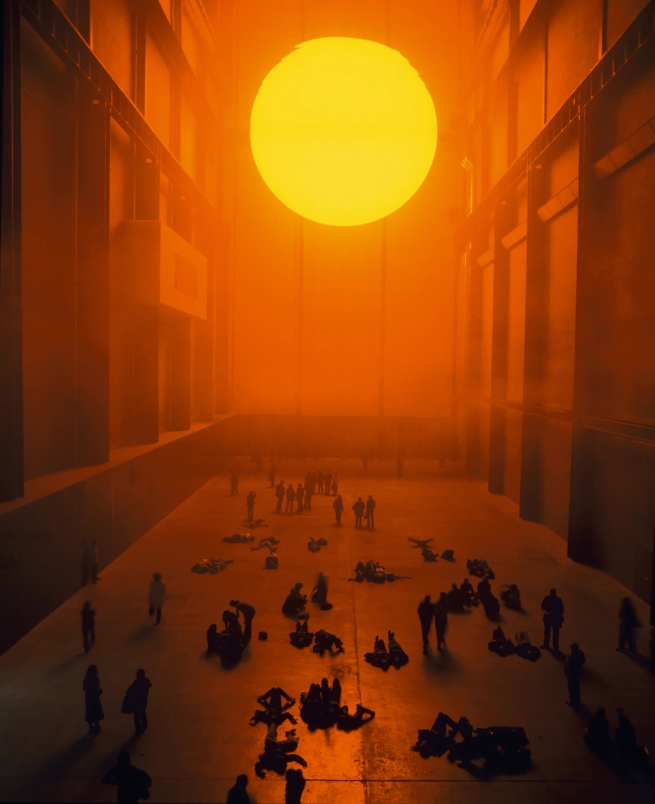
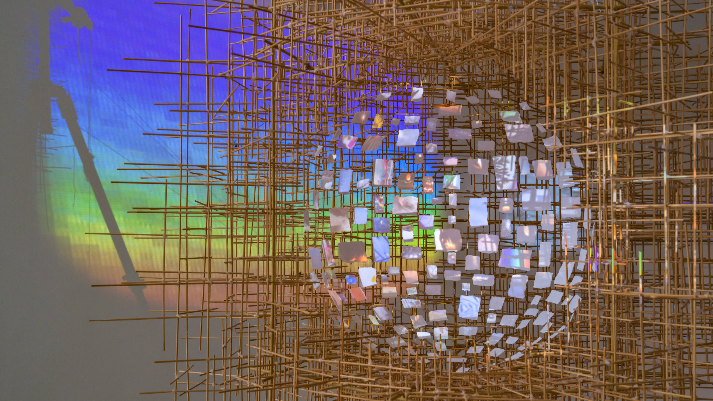

In art presences, sunset has been an obsession to many artists. Here would be some art pieces that I found very interesting:
The Weather Project is an piece that I personally found very attracted to. It is an spatial installation art mde by Olafur Eliasson.
Eliasson's ability to fuse art, science, and natural phenomena reached its peak when he began creating large-scale immersive installations. For his most famous installation, The weather project, the enormous Turbine Hall at the Tate Modern in London, was transformed by Eliasson into an artificial environment. Eliasson produced a massive false sun with a brilliant glow using a simple arrangement of 200 bulbs, arranged in a semicircle and reflected from a mirrored ceiling.
Here is a link to the Weather Project.
Timelapse is also an installation peoject, but quite recent. It is consist with a series of artisitic explorations of captureing the time and state of minds.
EInside the museum, Sze arranged a path of unexpected encounters: a pendulum hovering above the fountain on the rotunda floor, an installation tucked into a hallway in front of the freight elevator. These quiet gestures scored visitors’ progress to the top level of the rotunda, where an immersive environment comprising new works of sculpture, painting, installation, and sound awaited them. These expansive sequence of eight bays were connected by a river of videos that traveled across, above, and behind the works on view, forming a site-specific horizon line of moving images.
Here is a link to the Timelapse.